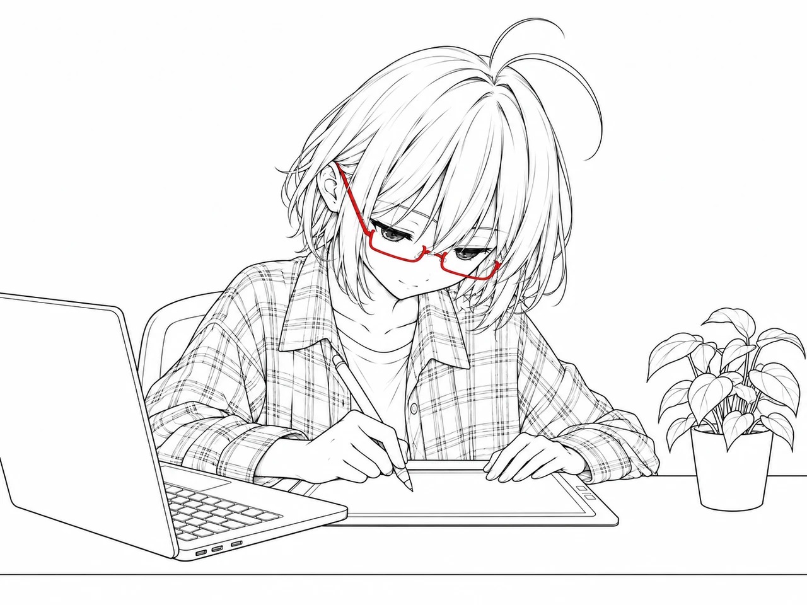
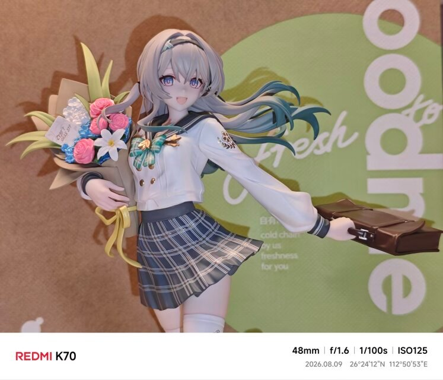

Sywen's SpaceResearch · Code · Life
A NOTEBOOK IN PROGRESS
University of South ChinaData Science and Big Data Technology
Interests — AI / Multimodal Learning
Research, code, life, and things I like.

最近的几页。
A-01学业 / 4 分钟
科研绘图的风格不该来自一组没有出处的默认参数。这套 skill 从官方指南、真实论文图和学术色板文献中学习，并把来源、校验与诚实降级写进工作流。
A-02学业 / 4 分钟
论文伴读不应该自动替研究者总结。这套 skill 用低负担的三遍阅读、六类证据标记和材料边界，陪读者形成可靠、可追溯、有适用边界的理解。
A-03我喜欢的 / 1 分钟
如果是和流萤一起做同桌的话，再读高中三年也不是不行。放两只流萤手办的照片，顺便记下关于南华、清华和上交的玩笑。

我喜欢的
如果是和流萤一起做同桌的话，再读高中三年也不是不行。
继续读「我喜欢的」
自动复制不可用，请按 Ctrl/Cmd+C 手动复制，或按 Esc 关闭。